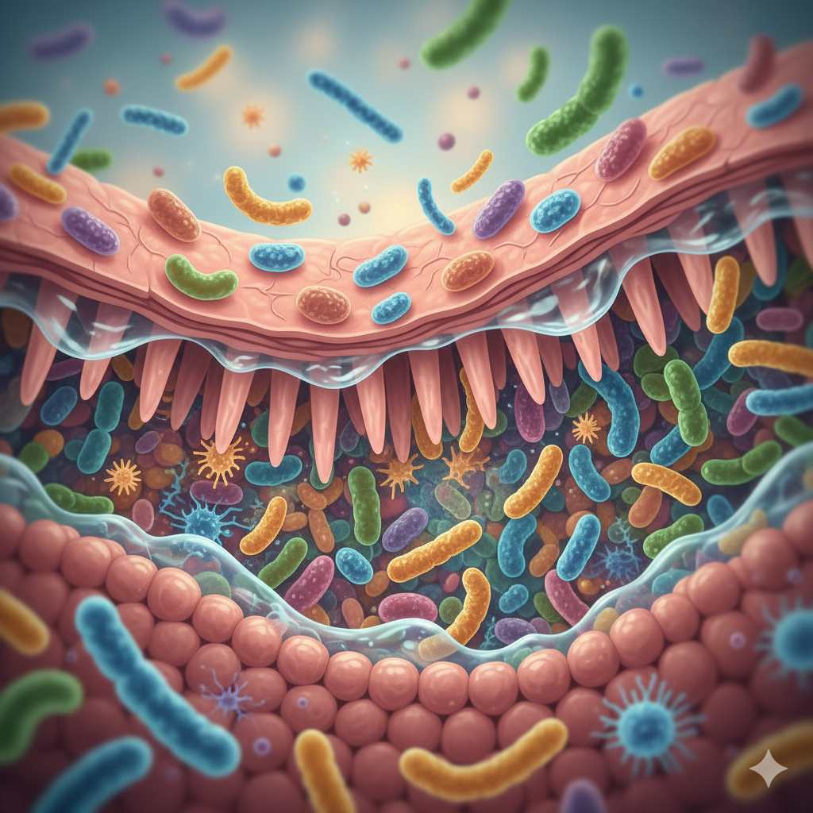

Have you ever considered that the key to vibrant health might lie not in your medicine cabinet, but in your gut? It's true—the trillions of microorganisms living in your digestive system play a surprisingly powerful role in everything from your immune function to your mood. In my years of practice, I've seen patients transform their health by focusing on one crucial aspect: balancing their gut microbiome.
Today, we're diving deep into the world of gut health, specifically exploring the critical difference between probiotics and prebiotics. These two terms are often used interchangeably, but they play distinct roles in maintaining your digestive ecosystem. Understanding this difference is the first step toward optimizing your gut health and reaping the benefits of improved digestion, enhanced immunity, and even better mental clarity.
The Gut Microbiome: Your Internal Ecosystem
Before we explore probiotics and prebiotics, let's talk about what they're supporting—your gut microbiome. This complex community of bacteria, fungi, and other microorganisms functions almost like an additional organ in your body. Research from institutions like Harvard Medical School confirms that a balanced gut microbiome contributes to:
- Digestive efficiency: Breaking down food and absorbing nutrients
- Immune function: 70% of your immune system resides in your gut
- Mental health: The gut-brain axis influences mood and cognitive function
- Disease prevention: Reducing risk for conditions like IBS, obesity, and even some autoimmune disorders
Did You Know? The average human gut contains approximately 100 trillion microorganisms—that's more than the number of cells in your entire body!
Probiotics: The Beneficial Bacteria
Probiotics are live microorganisms that, when consumed in adequate amounts, provide health benefits to the host. Think of them as reinforcements for your gut's army of beneficial bacteria.
How Probiotics Work
Probiotics work by directly adding beneficial strains of bacteria to your gut ecosystem. They help crowd out harmful bacteria, produce substances that inhibit pathogens, and strengthen the gut lining. According to the World Gastroenterology Organisation, specific probiotic strains have been shown to help with conditions like antibiotic-associated diarrhea, IBS, and certain infections.
Best Food Sources of Probiotics
- Yogurt: Look for labels mentioning "live and active cultures"
- Kefir: A fermented milk drink with diverse probiotic strains
- Sauerkraut: Fermented cabbage (choose unpasteurized versions)
- Kimchi: Korean fermented vegetables
- Kombucha: Fermented tea beverage
- Miso: Japanese seasoning made from fermented soybeans
- Tempeh: Fermented soybean product
Prebiotics: Food for Your Gut Bacteria
While probiotics are the beneficial bacteria themselves, prebiotics are the specialized plant fibers that act as food for these bacteria. They're essentially fertilizer for your gut garden, helping your existing good bacteria thrive and multiply.
How Prebiotics Work
Prebiotics are non-digestible fibers that pass through your upper gastrointestinal tract undigested. When they reach your colon, they become food for the beneficial bacteria living there. As these bacteria ferment prebiotics, they produce short-chain fatty acids like butyrate, which provide energy for colon cells and offer anti-inflammatory benefits throughout the body.
Best Food Sources of Prebiotics
- Garlic and onions: Rich in inulin and fructooligosaccharides (FOS)
- Leeks and asparagus: Excellent sources of inulin
- Bananas: Especially slightly green ones containing resistant starch
- Whole grains: Oats, barley, and wheat bran
- Legumes: Chickpeas, lentils, and beans
- Jerusalem artichokes: One of the richest prebiotic sources
- Dandelion greens: Can be added to salads or smoothies
Probiotics vs Prebiotics: The Key Differences
| Aspect | Probiotics | Prebiotics |
|---|---|---|
| Definition | Live beneficial bacteria | Non-digestible fibers that feed good bacteria |
| Function | Add directly to gut flora population | Stimulate growth of existing beneficial bacteria |
| Examples | Yogurt, kefir, sauerkraut, kimchi | Garlic, onions, bananas, asparagus, oats |
| Heat Sensitivity | Can be destroyed by heat | Generally heat-stable |
| Survival in Gut | Must survive stomach acid to reach colon | Pass through digestion unchanged |
Why You Need Both: The Synbiotic Approach
The most effective gut health strategy combines both probiotics and prebiotics—an approach sometimes called "synbiotics." Think of it this way: taking probiotics without prebiotics is like planting seeds in poor soil, while consuming prebiotics without probiotics is like fertilizing an empty garden.
Research published in the journal Nutrients highlights that combining specific probiotics with their preferred prebiotics can enhance the survival and colonization of beneficial bacteria in the gut. This synergistic approach leads to more significant health benefits than either component alone.
Simple Ways to Combine Probiotics and Prebiotics
- Yogurt with banana slices and oats
- Kefir smoothie with dandelion greens and slightly green banana
- Sauerkraut added to a lentil soup
- Kimchi served with brown rice
- Miso soup with onions and garlic
Signs Your Gut May Be Out of Balance
How do you know if your gut microbiome needs attention? Here are some common signs of imbalance to watch for:
- Digestive issues: Bloating, gas, constipation, diarrhea, or heartburn
- Food cravings: Especially for sugar and refined carbohydrates
- Unexplained weight changes: Both gain and loss without dietary changes
- Sleep disturbances or constant fatigue
- Skin irritations: Like eczema, rosacea, or acne
- Autoimmune conditions: Such as rheumatoid arthritis or Hashimoto's thyroiditis
- Mood issues: Anxiety, depression, or irritability
- Frequent infections: Suggesting compromised immunity
Important Note: If you're experiencing persistent digestive symptoms, it's essential to consult with a healthcare provider to rule out underlying conditions like celiac disease, inflammatory bowel disease, or other gastrointestinal disorders.
Practical Strategies to Support Your Microbiome
1. Diversify Your Plant Intake
Aim for at least 30 different plant-based foods each week. This diversity provides various fibers that feed different beneficial bacteria strains. Research from the American Gut Project found that people who ate more than 30 different plant types per week had significantly more diverse gut microbiomes than those eating 10 or fewer.
2. Include Fermented Foods Regularly
Try to include at least one serving of fermented foods in your daily diet. Start with small amounts if you're new to fermented foods to allow your system to adjust.
3. Manage Stress
Chronic stress can negatively impact your gut bacteria. Incorporate stress-reduction techniques like meditation, deep breathing, or gentle exercise into your routine.
4. Prioritize Sleep
Poor sleep can disrupt your gut microbiome. Aim for 7-9 hours of quality sleep per night to support both your gut and overall health.
5. Use Antibiotics Judiciously
While sometimes necessary, antibiotics can significantly disrupt gut bacteria. Only use them when prescribed by a doctor, and consider probiotic supplementation during and after treatment (consult your healthcare provider).
6. Stay Hydrated
Water is essential for digestive health and helps fiber do its job effectively in your gut.
Frequently Asked Questions
For most healthy individuals, food sources of probiotics can be sufficient, especially when combined with prebiotic foods. However, supplements may be beneficial in specific situations like after antibiotic use, for certain digestive conditions, or when dietary intake is limited. If considering supplements, look for products with researched strains and CFU counts appropriate for your needs, and consult with a healthcare provider.
Yes, some people may experience temporary gas, bloating, or digestive discomfort when significantly increasing prebiotic fiber intake. This is often a normal response as your gut bacteria adjust and increase fermentation activity. To minimize discomfort, increase high-fiber foods gradually over several weeks, drink plenty of water, and consider cooking fibrous vegetables, which can make them easier to digest initially.
This varies depending on your starting point and the consistency of your efforts. Some people notice digestive improvements within days to weeks of dietary changes. However, significant changes to your gut microbiome composition typically take several months of consistent practice. Research suggests it can take 3-6 months of sustained dietary changes to establish more permanent shifts in your gut bacteria populations.
Final Thoughts
Caring for your gut microbiome through a balanced approach to probiotics and prebiotics is one of the most powerful investments you can make in your overall health. Remember that diversity is key—both in the types of beneficial bacteria you support and the plant fibers you consume to feed them.
Start with small, sustainable changes rather than overhauling your diet overnight. Your gut bacteria will thank you with improved digestion, stronger immunity, and potentially even better mood and mental clarity. Here's to your health—from the inside out!